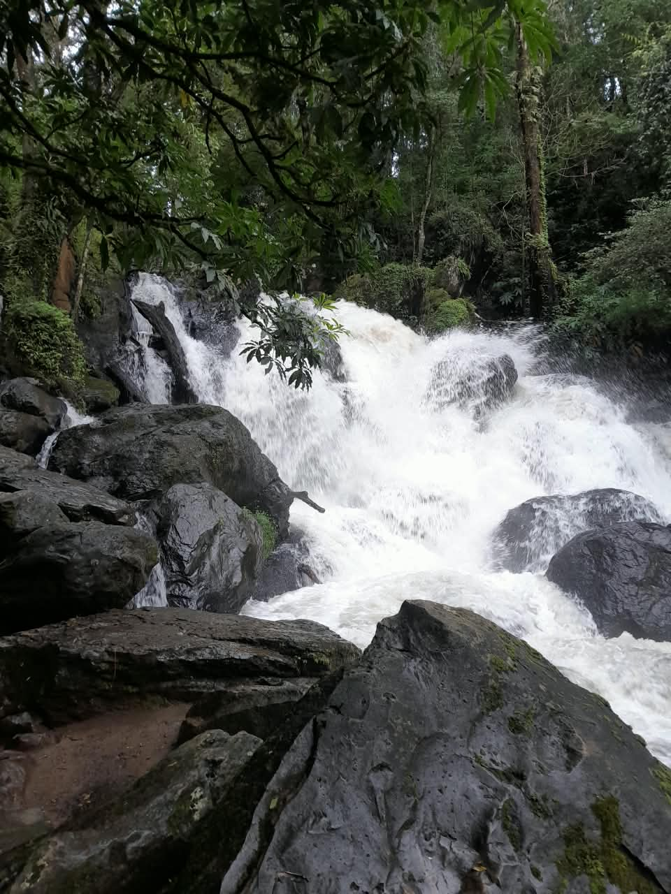
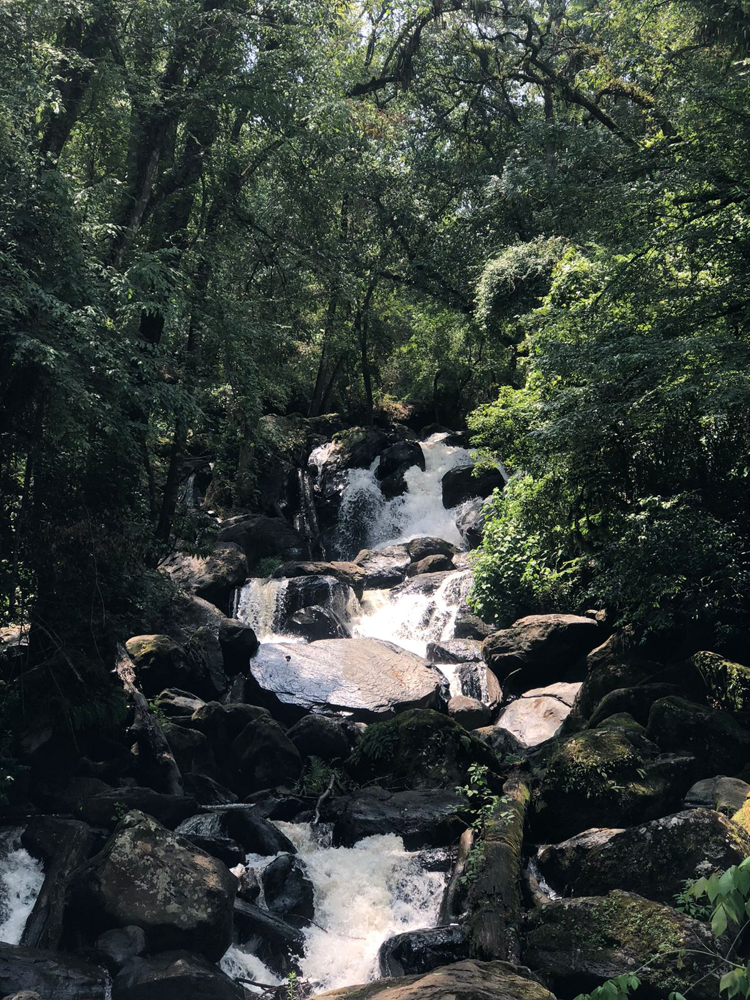

Es un atractivo natural ubicado en la zona de Avándaro, en Valle de Bravo, Es un lugar rodeado de abundante vegetación, árboles de pino y oyamel, donde se puede disfrutar de la tranquilidad y la belleza de la naturaleza.

VELO DE NOVIA, AVANDARO

Las cascadas Velo de Novia y Piedra De Molino son importantes por su valor ambiental, turístico y cultural dentro de Valle de Bravo
El valor ambiental y ecológico es porque forman parte de los ecosistemas boscosos (como bosques de pinos y encinos) y redes hídricas de la cuenca de Valle de Bravo, ayudando a conservar la biodiversidad local, regular el microclima y conectar el entorno serrano con el lago